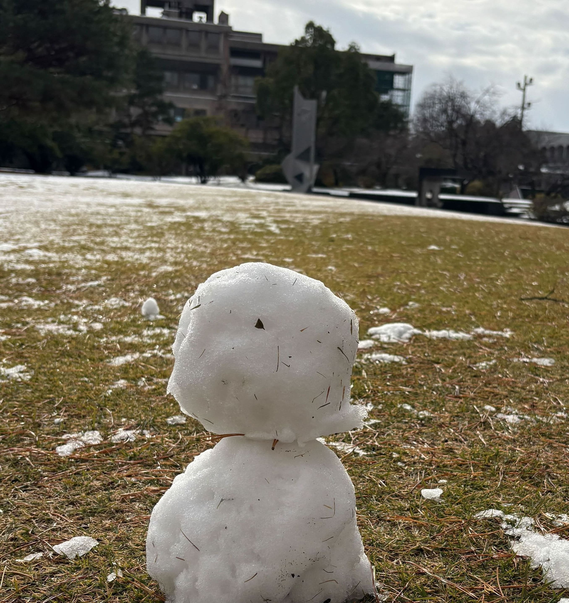

ゆうつじ.com
工学部情報工学科

石川県の情報工学科2年生
webアプリ開発、データ分析、教職課程
和歌山県出身
5,10km,ハーフマラソンのタイムを入力することで、フルマラソン完走予想タイムを計算するツール
詳しく見る2024年度スポーツデータサイエンスコンペティションに参加した際の論文です。
詳しく見る第45回小論文コンテスト2・3年次部門 第2位「グローバルで活躍する技術者になるために」
詳しく見るこのツールでは、あなたが入力した数字が素数かどうかを判断します。
詳しく見るFont Awesomeのアイコンを一覧表示し、各アイコンのコードを簡単に取得できる便利なツールです。
詳しく見るサイコロをお椀がなくてもチンチロで遊べるツールです。※音が出ます。
詳しく見る